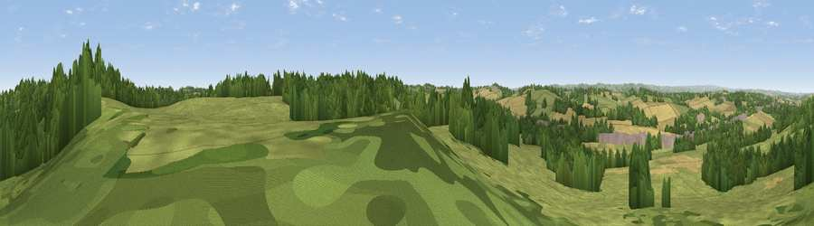

Viewpoint near Stainsby
#19162 in England · top 19% of its area beats it · near StainsbyThe view, rendered

A 360° render of this exact spot computed from the terrain model, tree cover and land cover — summer colours, afternoon light, calibrated against photographs of famous viewpoints. Real trees, hedges and buildings will differ in detail.
The panorama
Grey silhouette: terrain skyline in each direction (720 bearings, Earth curvature and refraction included). Dashed green: skyline with trees (+15 m) and buildings (+8 m) as obstacles. Blue strip: how far the ground is visible on each bearing.
Where the view opens
Wedge length = distance to the farthest visible ground on that bearing (vegetation-aware). Rings at 10, 25 and 50 km.
What fills the view
44% grassland · 34% woodland · 19% cropland · 3% built-up
Angular shares of the visible panorama (visual magnitude), not map area. Landscape diversity 0.51 (0–1 Shannon).
Key numbers
More beautiful places nearby
The staircase of upgrades: each row has a higher view potential than everything closer. Driving times are estimates from straight-line distance, calibrated against real road routing — check an actual route before setting out.
| Place | Direction | Drive | Score |
|---|---|---|---|
| Viewpoint near Palterton | NNE · 4 km | ~8 min | 58.5 |
| Viewpoint near Palterton | NNE · 4 km | ~10 min | 59.9 |
| Viewpoint near Bolsover | N · 6 km | ~14 min | 60.4 |
| Viewpoint near Alton | W · 10 km | ~20 min | 67.7 |
| Viewpoint near Brackenfield | WSW · 12 km | ~22 min | 68.3 |
| Crich Stand | SW · 15 km | ~27 min | 73.0 |
| Alport Height | SW · 20 km | ~34 min | 73.9 |
| Tissington Hill | WSW · 33 km | ~51 min | 75.5 |
53.17629, -1.31136 · source: screening · position refined by local search. Computed location — check access rights before visiting.